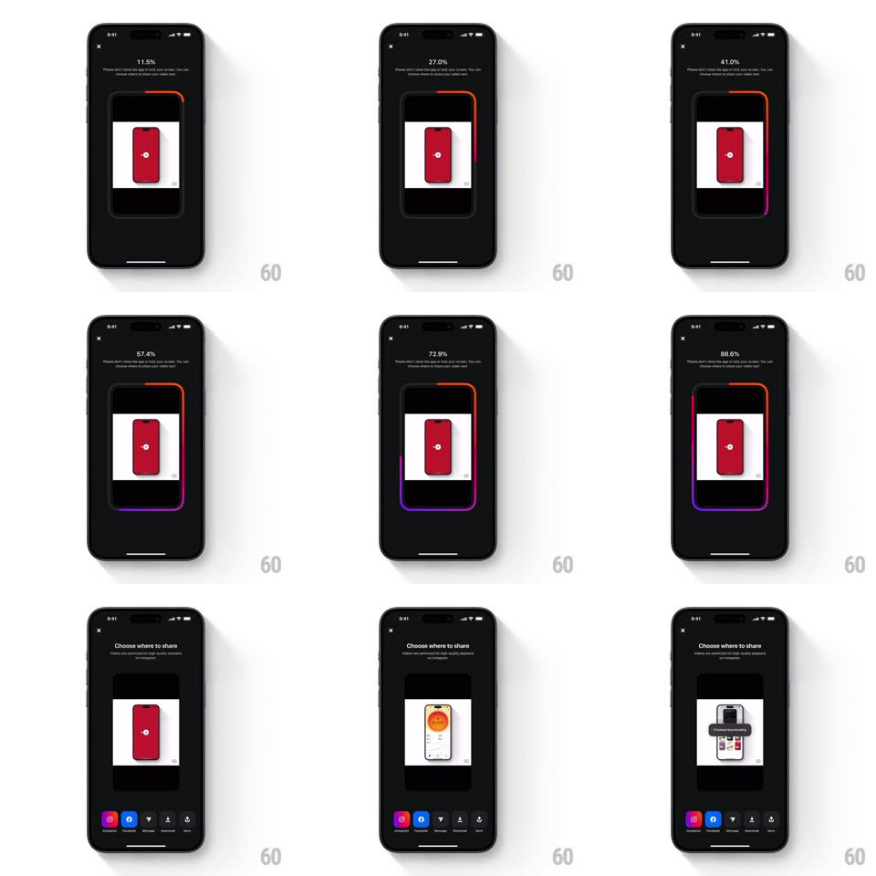

Media
Frame-by-frame

Rebuild this animation 1:1: Instagram Edits' export progress - a gradient border draws itself around the video preview as the percentage counts up, then the screen hands off to a "Choose where to share" sheet.

Rebuild this animation 1:1: Instagram Edits' export progress - a gradient border draws itself around the video preview as the percentage counts up, then the screen hands off to a "Choose where to share" sheet.
## Integration
Integration: stack-agnostic spec - springs given as stiffness/damping, timed motions as duration + curve; map every value to your framework and animation library of choice.
## Scene
Dark export screen: an X to cancel, a centered video preview (portrait clip of a red phone), the percentage readout ("13.3%" ... "98.4%") and the warning "Please don't close the app or lock your screen. You can continue using Edits while your video exports." Final state: "Choose where to share" with the finished preview and a row of share targets (Instagram, Facebook, Messages, WhatsApp, Download, Copy).
## Motion spec
Pattern: progress ring around a rounded rect, export-length.
- The border: a 3px gradient stroke (orange -> pink -> purple) traces the preview's rounded-rect perimeter, its drawn length matching export percent; the head of the stroke is brightest and the gradient rotates slowly as it draws.
- Percent: the number counts up in sync (monotonic, no easing jumps).
- Completion: the stroke closes the loop and flashes once (opacity 1 -> 0.4 -> 1, 250ms), then the preview lifts 20px while the share sheet slides up (spring ~320/26, 400ms).
- Share icons pop in left to right (spring ~420/18, 35ms stagger).
## Calibration
- Stroke progress is tied to real export progress - never a timed fake.
- The preview keeps playing the first frame; only the border animates during export.
## Reduced motion
A simple progress bar replaces the tracing border.
## Don't miss
- The gradient travels around the corners smoothly - no segmented per-side fill.
- The share sheet arrives only after the loop fully closes.